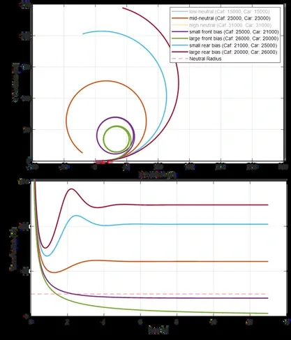

Course project · ME 303
Vehicle dynamics in MATLAB
A vehicle handling simulator I wrote in MATLAB to recommend safe vehicle and driving parameters.
- Course
- ME 303, numerical methods and ODEs
- Tools
- MATLAB, RK4
- 100%
- grade

The assignment
The goal was to recommend vehicle parameters and driving behaviour that keep a car safe in bad conditions. I modelled the car as a bicycle model with Ackermann steering, wrote the physics as a system of ODEs and solved it with RK4 in MATLAB.
Results
- A general simulator that takes any set of vehicle parameters and driving inputs.
- Handling behaviour, understeer or oversteer, mapped across a range of conditions, with design and driving recommendations.
- The report got 100%, and Prof. Zhao Pan uses it as an example of good mathematical modelling.

